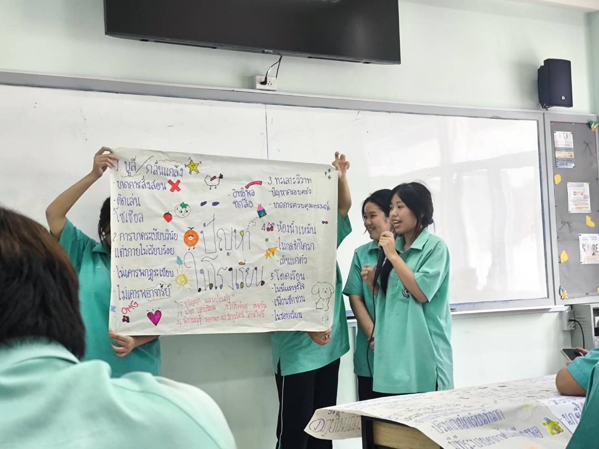

การคิดวิเคราะห์
ชอบตั้งคำถาม สังเกต ทดลอง และค้นหาคำตอบจากข้อมูล
SKILLS
ทักษะที่ได้พัฒนาจากการเรียน การทำโครงงาน และการทำกิจกรรมร่วมกับผู้อื่น
ชอบตั้งคำถาม สังเกต ทดลอง และค้นหาคำตอบจากข้อมูล
เรียนรู้จากกระบวนการทำกิจกรรมและโครงงานอย่างเป็นขั้นตอน
สามารถสื่อสาร รับฟัง แบ่งหน้าที่ และร่วมมือกับผู้อื่นเพื่อให้งานสำเร็จได้
